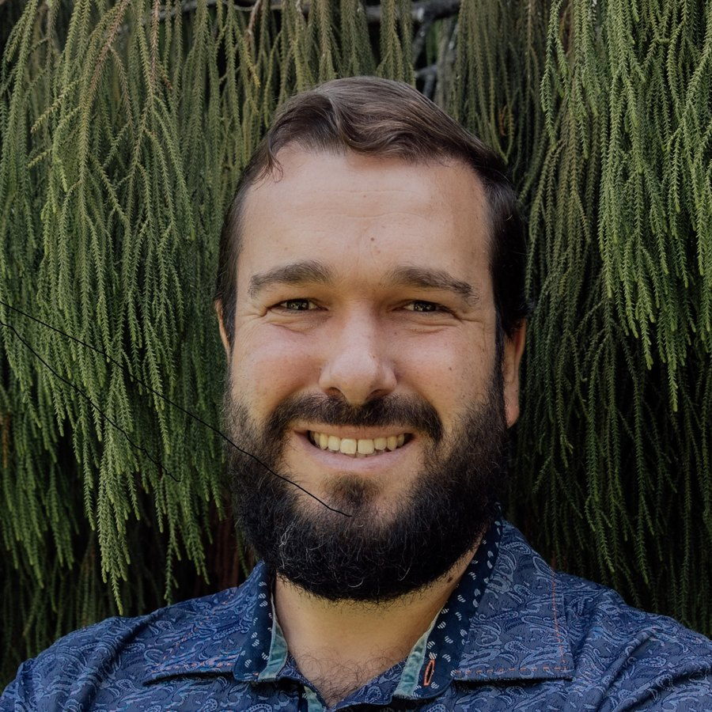

Photograph to follow
The teacher behind Discovery Lab
Diego Urrutia Guevara
Educator, programme leader and former consultant, bringing experience from both education and the professional world into his teaching.
About Diego
Before and alongside his work in education, Diego worked across international consultancy and biodiversity, experiences that shaped how he approaches learning today. He believes students learn best when knowledge is connected to real problems, investigation, decision-making and the world beyond the classroom.
At Crimson Global Academy, Diego teaches students while also supporting the development of other teachers across the Primary Programme. His work includes teacher coaching and onboarding, instructional quality, enrichment, and the development of new approaches to online learning. His contribution to Primary has grown from his own classroom practice, testing ideas with students first and then sharing what works with other educators.
Students learn best when knowledge is connected to real problems, investigation, decision-making and the world beyond the classroom.
This combination of classroom teaching, educational leadership and professional experience shapes his approach with students. Lessons are designed not simply around completing content, but around helping students become curious, independent and confident learners who know how to think, question, investigate and apply what they know.
Diego has a particular interest in the thoughtful use of technology and AI in education. He develops interactive simulations, virtual investigations and other digital learning experiences that give students opportunities to experiment, make decisions, test ideas and learn through experience.
At the centre of his work is a simple goal: to help young people enjoy learning while developing the knowledge, skills and independence they will need for what comes next.
Beyond his own students, Diego works with teachers to strengthen their practice and create engaging, student-centred learning experiences across the programme.
Why this site exists
Discovery Lab is where that last idea becomes something you can actually click. Every activity here is an investigation rather than a worksheet: run the experiment, record what you find, explain what it means, and leave with the evidence to submit.